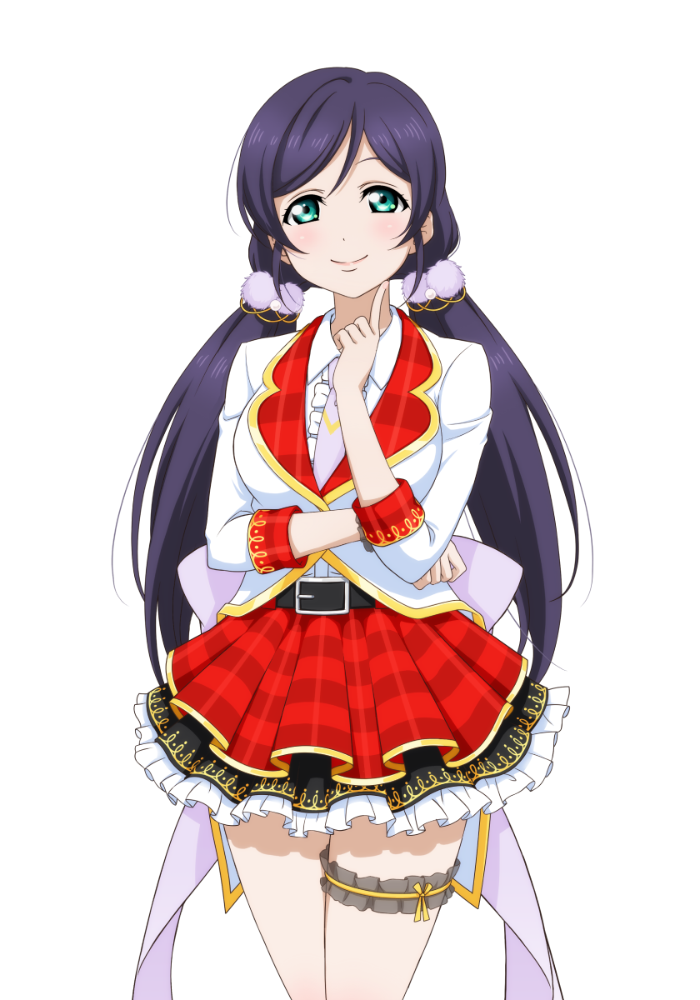

Honoka adalah pemimpin sekaligus. Pencipta Grup sekolah aidol U's

Kotori adalah teman masa kecil Honoka, sekaligus pemiliki sekolah otona dan menjadi anggota u's

Umi sama seperti kotori dia adalah teman masa kecil honoka. dia adalah seorang yang pemalu, tetapi memiliki tingkat disiplin yang tinggi. berkat dia juga U's bisa melangkah lebih jauh.

Rin adalah karakter lain yang penting dalam grup U's.

Eri adalah anggota lainnya dalam grup U's.

Nozomi adalah salah satu anggota grup yang memiliki kepribadian unik.

Nico adalah anggota yang sangat energik dan ceria.

Hanayo adalah penggemar setia dan anggota grup yang penuh semangat.

Maki adalah anggota berbakat dalam grup U's.